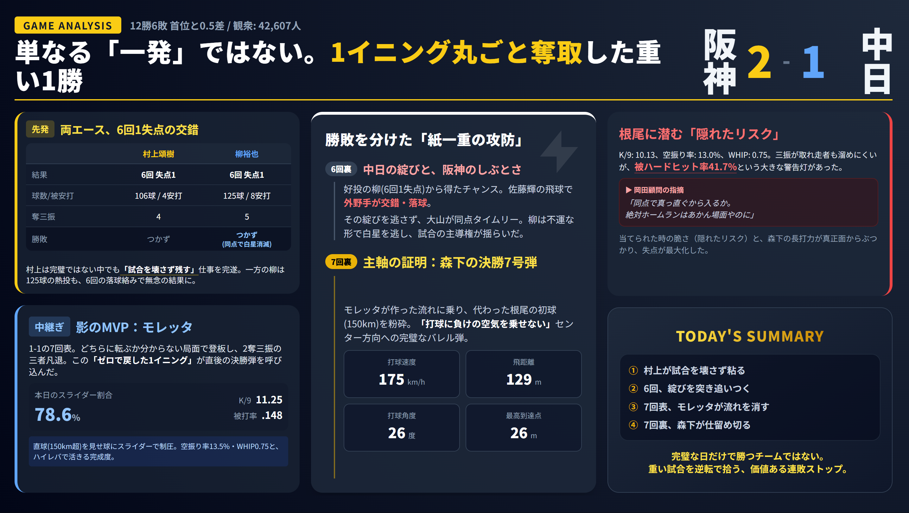

森下翔太の決勝7号ソロは決定打。だがこの試合は、6回の守備の綻びと7回表のモレッタ制圧まで含めて完成した勝ちだった。
阪神が中日を2-1で下し、連敗を2で止めた。村上頌樹が6回1失点でゲームメイク、6回の左中間交錯から大山悠輔が同点タイムリー、7回表にモレッタが14球中11球スライダーで2奪三振無失点、そして7回裏に森下翔太が根尾昂の初球150キロを左中間スタンドへ——1点差を拾い切った一戦を分解する。
- 阪神の2-1勝利は、森下翔太の決勝弾だけでなく、6回の同点と7回表のモレッタまで含めて完成した勝ち方だった。
- 柳裕也は好投したが、6回の守備の綻びと7回の被弾で中日は勝ち切れなかった。
- 阪神は重たい試合を終盤で拾えるチームになりつつあり、この1勝は数字以上に中身が濃い。
打球速度174キロ／飛距離129m
1回1安打無失点2奪三振
岩崎優 5セーブ目
試合結果｜2-1で連敗ストップ
GAME RESULT2026年4月17日（金）甲子園。阪神タイガース 対 中日ドラゴンズ。先発は阪神が村上頌樹、中日が柳裕也。互いに6回1失点の好投で、試合は0-1のまま終盤まで静かに流れた投手戦だった。
| 項目 | 内容 |
|---|---|
| 日付・球場 | 2026年4月17日（金）甲子園 |
| 対戦カード | 阪神タイガース vs 中日ドラゴンズ |
| スコア | 阪神 2 - 1 中日（阪神勝利） |
| 勝投手 | 村上頌樹（4勝0敗） |
| 敗投手 | 柳裕也 |
| セーブ | 岩崎優（5セーブ） |
| 阪神先発 | 村上頌樹（6回1失点） |
| 中日先発 | 柳裕也（6回1失点） |
| 本塁打 | 森下翔太 7号ソロ（7回） |
| チーム状況 | 連敗2で止め、貯金維持 |
試合の流れ｜イニング別タイムライン
GAME FLOW初回の先制点から森下の決勝弾、そして終盤の継投まで。この試合の分岐点は1回と6回と7回に集中している。
高橋周平タイムリー
阪神は好機活かせず
大山が同点タイムリー
2奪三振無失点
2-1逆転
リレー完成
高橋周平の先制タイムリー
中日は初回2死一、二塁から高橋周平がレフト前へ先制タイムリー。阪神先発・村上頌樹は先に1点を失ったが、大崩れせずゲームメイクを続けた。
柳を崩し切れない阪神
阪神は走者を出しながらも決定打が出ない。4回には坂本誠志郎の二塁打で好機を広げたが得点にはつながらなかった。柳裕也は球数を要しながらも6回1失点でしのいだ。
左中間の交錯から同点へ
佐藤輝明の打球を追った中堅・花田旭と左翼・細川成也が左中間で交錯。花田のグラブからボールがこぼれ、佐藤輝は一気に三塁へ。続く大山悠輔がレフト前へ適時打を放ち1-1。公式記録上は失策なし、だが守備の綻びが核心だった。
14球中11球スライダーの制圧
同点の7回表、阪神はモレッタを投入。14球中11球がスライダー（78.6%）、結果は1回1安打無失点2奪三振。次の1点を取りにいける空気を阪神が保った。
森下翔太、初球を仕留める
1死走者なし。根尾昂の初球150キロストレートを森下翔太が左中間スタンドへ。打球速度174キロ、打球角度25度、飛距離129メートル——阪神2-1と逆転。根尾は初球が甘く入り、その1球を森下が完璧に仕留めた。
ドリス・岩崎で逃げ切り
8回はドリス、9回は岩崎優が無失点で逃げ切り。村上→モレッタ→ドリス→岩崎のリレーで中日を1点に封じ込めた。
データで見るポイント｜決勝弾とモレッタの中身
DATA ANALYSISチームスタッツ
| 項目 | 阪神 | 中日 |
|---|---|---|
| 得点 | 2 | 1 |
| 安打 | 9 | 6 |
| 失策 | 0 | 0 |
| 先発 | 村上頌樹 6回1失点 | 柳裕也 6回1失点 |
| 本塁打 | 森下 7号 | なし |
森下翔太 決勝弾データ
| 項目 | 数値 |
|---|---|
| 打球速度 | 174〜175キロ |
| 打球角度 | 25〜26度 |
| 飛距離 | 129メートル |
| 球種 | 初球ストレート（150キロ） |
| 結果 | 左中間 決勝7号ソロ |
モレッタの1イニング／根尾昂データ
| モレッタ | 数値 | 根尾昂 | 数値 |
|---|---|---|---|
| 投球数 | 14球 | K/9 | 10.13 |
| スライダー | 11球（78.6%） | 空振り率 | 13.0% |
| フォーシーム | 3球 | WHIP | 0.75 |
| 奪三振 | 2 | 被ハードヒット率 | 41.7% |

キーモーメント｜勝ちの3本柱
KEY MOMENTSこの試合を支えたのは6回の綻び・7回のモレッタ・森下の決勝弾の3本柱。どれか1つが欠けても拾えなかった1点差ゲームだった。
気になった点｜3つの注意ポイント
RISK PATTERNS勝ったとはいえ、1点差ゲームは裏返しのリスクが常にある。今後見ておきたい3点。
選手評価｜7人の働きを格付け
PLAYER RATINGS| 選手名 | 良かった点 | 評価 | 次戦への見方 |
|---|---|---|---|
| 森下翔太 | 7回の決勝7号ソロ。場面・内容・打球質すべてが強烈 | A+ | 1打席で試合を決められる中軸としての格がさらに上がった |
| モレッタ | 同点の7回を2奪三振無失点。流れを一切渡さなかった | A | 勝ちを呼び込む中継ぎとして起用の幅が広がる |
| 村上頌樹 | 6回1失点で試合を残した。悪いなりにまとめた | A- | 完璧でなくても試合を作れる先発として信頼度は高い |
| 大山悠輔 | 6回の同点タイムリー。重い空気を変える一打 | A- | 打線のつなぎ役と返す役の両方を担える存在 |
| 柳裕也 | 6回1失点。阪神打線に押し切られず粘った | A- | 内容は十分。次戦も厄介な相手 |
| 根尾昂 | 中野から三振を奪うなど球威は見せた | C+ | 初球の甘さが被弾を招いた。打たれ方の管理が焦点 |
| 岩崎優 | 9回無失点、5セーブ目 | A- | 終盤の最終ラインとして安定感を保ちたい |
よくある疑問への答え
FAQ光った点・課題点｜試合総括
PROS & CONS勝負の分岐点｜5つの瞬間
TURNING POINTS初回に先制を許しながらも1点で踏みとどまった村上の投球が、この試合の粘りの起点となった。大崩れしないことがゲームメイクの根幹だった。
花田と細川の交錯は公式記録に残らない。それでも試合を1-1の同点に動かした実質的な要因がここにある。スコアシートに映らない綻びが試合を変えた典型だった。
同点で迎えた7回表を2奪三振無失点で抑えたことで、阪神は攻撃に入るまでの心理的余裕を保った。14球中11球スライダーの徹底ぶりが機能した。
根尾の初球150キロが甘く入った。しかしその1球を逃さず左中間スタンドへ運んだ森下の決断と技術が、試合を決定づけた。失投と好打が重なった一瞬だった。
1点差ゲームを終盤に拾える力は、シーズンを通じた順位を大きく左右する。連敗を2で止めたこの1勝は、数字以上に意味が重い。
次戦の見方｜4つの注目軸
NEXT GAME MAP「勝った」で終わらせず、次戦の見どころを4軸で整理する
森下の一発だけで試合を語ると、6回の綻びと7回のモレッタが持っていた重さを見落とす。次戦も「1点差を拾う力」の積み重ねをチェックしたい。